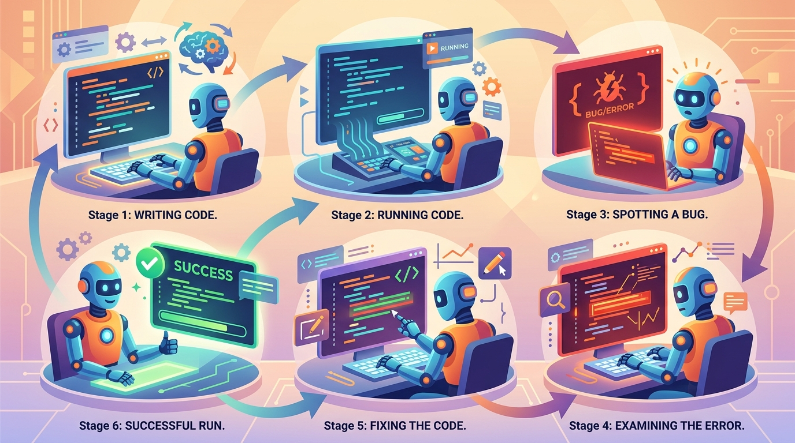

The real test of intelligence is not writing code, but knowing when to run it, read the output, and try again.
A Code-Executing AI Agent
Prerequisites
This section builds on the tool use framework from Section 21.2 and the planning architectures from Section 21.3. Understanding prompt injection risks from Section 10.4 is important for the security considerations of code execution agents.
Code generation agents represent the most powerful and most dangerous category of LLM agents. By writing and executing code, an agent can perform arbitrary computation: analyze datasets, generate visualizations, query databases, transform files, and automate complex workflows. The same capability that makes code agents incredibly useful also makes them a serious security risk. This section covers the architecture of code execution agents, sandboxing strategies that make them safe, and patterns for building reliable data analysis and software engineering agents. The prompt injection defenses from Section 10.4 are especially critical when agents can execute arbitrary code.
1. The Code Interpreter Pattern
A code interpreter agent follows a simple but powerful loop: the user describes a task in natural language, the LLM generates Python (or SQL, or another language) to accomplish it, the code executes in a sandbox, and the agent inspects the output. If the code fails or produces incorrect results, the agent can see the error, reason about the cause, and generate corrected code. This iterative write-run-debug cycle is what makes code agents so effective for data analysis, where the exact operations needed are often discovered through exploration. Figure 21.4.1 shows the code interpreter loop.
Code agents have rediscovered what every programmer knows: the first attempt never works. The difference is that agents never complain about it on social media.
2. Sandboxed Execution Environments
Running LLM-generated code on your own machine without isolation is extremely dangerous. The model might generate code that deletes files, exfiltrates data, installs malware, or consumes unlimited resources. Sandboxed execution environments provide isolation by running code in a container or microVM with strict resource limits, no network access (or restricted network access), and a minimal filesystem. Two popular solutions are E2B (cloud sandboxes) and Modal (serverless containers). Code Fragment 1 below puts this into practice.
| Platform | Isolation | Startup Time | Persistence | Best For |
|---|---|---|---|---|
| E2B | Firecracker microVMs | ~150ms | Session-scoped (ephemeral) | Interactive code interpreters, data analysis |
| Modal | gVisor containers | ~300ms cold, instant warm | Function-scoped with volumes | Batch processing, GPU workloads |
| Docker (self-hosted) | Linux namespaces + cgroups | ~1s | Configurable | Full control, on-premise requirements |
| AWS Lambda | Firecracker microVMs | ~200ms warm | Stateless (use S3 for data) | Event-driven, auto-scaling workloads |
# implement run_code_in_sandbox # Key operations: results display from e2b_code_interpreter import Sandbox def run_code_in_sandbox(code: str, timeout: int = 30) -> dict: """Execute Python code in an E2B cloud sandbox with resource limits.""" sandbox = Sandbox( timeout=timeout, # Max execution time in seconds ) try: # Upload any required data files sandbox.files.write("/home/user/data.csv", data_bytes) # Execute the LLM-generated code execution = sandbox.run_code(code) return { "success": not execution.error, "stdout": execution.text, "stderr": execution.error.value if execution.error else "", "charts": [r.png for r in execution.results if r.png], } finally: sandbox.kill() # Always clean up the sandbox # Example: execute LLM-generated analysis code result = run_code_in_sandbox(""" import pandas as pd df = pd.read_csv('/home/user/data.csv') print(f"Shape: {df.shape}") print(f"Columns: {list(df.columns)}") print(df.describe().to_string()) """) print(result["stdout"])
Never execute LLM-generated code without sandboxing. Even seemingly harmless code can cause damage. A model asked to "clean up temporary files" might generate shutil.rmtree('/'). A model asked to "check the weather" might make unauthorized network requests. Always use a sandbox with: (1) CPU and memory limits, (2) execution time caps, (3) no network access by default, (4) a minimal filesystem with only the required data files, and (5) no access to secrets, credentials, or environment variables.
3. Data Analysis Agents: Natural Language to Pandas/SQL
Data analysis is the most common use case for code execution agents. The user describes what they want to learn from a dataset in plain English, and the agent generates pandas code (or SQL queries) to answer the question. The key challenge is that the agent needs to understand the dataset's schema and content before it can write correct code. A robust data analysis agent follows a three-phase approach: profile the data, generate analytical code, and validate the results. Figure 21.4.2 outlines the three-phase data analysis pipeline. Code Fragment 2 below puts this into practice.
# Define DataAnalysisAgent; implement __init__, profile_data, ask # Key operations: visualization, results display, agent orchestration from openai import OpenAI from e2b_code_interpreter import Sandbox client = OpenAI() class DataAnalysisAgent: """Agent that translates natural language questions into pandas code.""" def __init__(self, data_path: str): self.sandbox = Sandbox(timeout=60) self.data_path = data_path self.schema = None self.conversation = [] def profile_data(self) -> str: """Phase 1: Profile the dataset to understand its structure.""" profile_code = f""" import pandas as pd df = pd.read_csv('{self.data_path}') info = {{ 'shape': df.shape, 'columns': {{col: str(dtype) for col, dtype in df.dtypes.items()}}, 'sample': df.head(3).to_dict(), 'nulls': df.isnull().sum().to_dict(), 'stats': df.describe(include='all').to_dict() }} import json print(json.dumps(info, indent=2, default=str)) """ result = self.sandbox.run_code(profile_code) self.schema = result.text return self.schema def ask(self, question: str, max_retries: int = 3) -> dict: """Phase 2 and 3: Generate code, execute, validate, and explain.""" if not self.schema: self.profile_data() self.conversation.append({"role": "user", "content": question}) for attempt in range(max_retries): # Generate pandas code code_response = client.chat.completions.create( model="gpt-4o", messages=[ {"role": "system", "content": ( "You are a data analyst. Write Python pandas code to answer " "the user's question. The DataFrame is loaded as `df`. " "Always print results. For plots, use matplotlib and call " "plt.savefig('/tmp/chart.png'). Return ONLY the code." f"\n\nDataset schema:\n{self.schema}" )}, *self.conversation ] ) code = code_response.choices[0].message.content code = code.strip().strip("```python").strip("```") # Execute in sandbox full_code = f"import pandas as pd\ndf = pd.read_csv('{self.data_path}')\n{code}" execution = self.sandbox.run_code(full_code) if not execution.error: return {"code": code, "output": execution.text, "charts": [r.png for r in execution.results if r.png]} # Self-debug: feed error back for correction self.conversation.append({ "role": "user", "content": f"The code raised an error:\n{execution.error.value}\nPlease fix it." }) return {"error": "Failed after maximum retries"} # Usage agent = DataAnalysisAgent("/home/user/sales_q4.csv") result = agent.ask("What are the top 5 products by revenue, and show a bar chart?") print(result["output"])
Schema-first code generation is dramatically more reliable. When the LLM knows the exact column names, data types, and sample values before writing code, it avoids the most common errors: misspelled column names, wrong data types in comparisons, and incorrect assumptions about data structure. Always profile the dataset and include the schema in the system prompt before asking the model to generate analytical code.
4. Code Generation and Self-Debugging
Self-debugging is the process by which a code agent inspects its own errors, reasons about the cause, and generates corrected code. Research shows that LLMs are surprisingly effective at debugging their own code when given the error traceback along with the original code. The key is to provide structured feedback: the full traceback, the relevant code section, and (when possible) the expected vs. actual output. Code Fragment 3 below puts this into practice.

# implement generate_and_debug # Key operations: prompt construction, API interaction from openai import OpenAI client = OpenAI() def generate_and_debug( task: str, sandbox, max_debug_rounds: int = 3 ) -> dict: """Generate code, execute it, and self-debug on failure.""" messages = [ {"role": "system", "content": ( "You are a Python programmer. Write clean, correct code. " "Return ONLY executable Python code, no explanations." )}, {"role": "user", "content": task} ] all_attempts = [] for round_num in range(max_debug_rounds): # Generate code response = client.chat.completions.create( model="gpt-4o", messages=messages ) code = response.choices[0].message.content code = code.strip().strip("```python").strip("```") # Execute execution = sandbox.run_code(code) attempt = { "round": round_num + 1, "code": code, "output": execution.text, "error": execution.error.value if execution.error else None } all_attempts.append(attempt) if not execution.error: return {"success": True, "code": code, "output": execution.text, "attempts": all_attempts} # Self-debug: provide structured error feedback debug_prompt = ( f"The code failed with this error:\n\n" f"```\n{execution.error.value}\n```\n\n" f"Here is the code that failed:\n\n" f"```python\n{code}\n```\n\n" f"Analyze the error, identify the root cause, and provide " f"corrected code. Return ONLY the complete fixed code." ) messages.append({"role": "assistant", "content": code}) messages.append({"role": "user", "content": debug_prompt}) return {"success": False, "attempts": all_attempts}
Research on self-debugging (such as the "Self-Debugging" paper from Chen et al., 2023) demonstrates that providing the model with its own incorrect code plus the error traceback yields significantly higher fix rates than simply re-prompting from scratch. The model can reason about the specific failure mode and make targeted corrections rather than generating entirely new (and potentially differently broken) code.
5. Software Engineering Agents
Software engineering (SWE) agents go beyond single-file code generation to handle multi-file projects, codebase navigation, test execution, and iterative development. Systems like Devin, SWE-agent, and OpenHands demonstrate that LLMs can navigate repositories, understand codebases, write patches, and run test suites to verify their changes. Section 24.1 explores the broader landscape of AI-assisted coding tools built on these foundations. The architecture typically combines a code editor interface, a terminal for running commands, a browser for reading documentation, and a planning layer that coordinates all of these tools.
Key Capabilities of SWE Agents
- Codebase navigation: Search files, read functions, understand project structure and dependencies.
- Contextual editing: Make targeted edits to specific functions or classes, preserving surrounding code.
- Test-driven development: Run existing tests, write new tests, and iterate until all tests pass.
- Multi-file changes: Coordinate changes across multiple files (e.g., updating an API endpoint, its tests, and its documentation).
- Version control: Create branches, commit changes, and prepare pull requests with descriptive messages.
| Agent Type | Scope | Typical Tools | Example Tasks |
|---|---|---|---|
| Code Interpreter | Single script | Execute Python, display output | Data analysis, visualization, calculations |
| Data Analysis Agent | Dataset exploration | Pandas, SQL, charting libraries | Business intelligence, reporting |
| SWE Agent | Full repository | Editor, terminal, browser, git | Bug fixes, feature implementation, refactoring |
| DevOps Agent | Infrastructure | CLI tools, cloud APIs, monitoring | Deployment, scaling, incident response |
6. Security: Sandboxing, Permissions, and Resource Limits
Security is the single most critical concern when building code execution agents. A poorly secured code agent is essentially a remote code execution vulnerability. Defense in depth is required: multiple independent security layers so that a failure in one layer does not compromise the entire system. Code Fragment 4 below puts this into practice.
The Security Layers
- Code filtering (pre-execution): Scan generated code for dangerous patterns before execution. Block imports of
os,subprocess,socket,shutil, and similar chapters. This is a weak defense on its own (easily bypassed) but useful as a first line. - Sandbox isolation: Run code in a container or microVM that is completely isolated from the host system. The sandbox should have no access to host filesystems, networks, or processes.
- Resource limits: Cap CPU time, memory usage, disk space, and the number of processes. Without these limits, generated code could mine cryptocurrency, fill disks, or fork-bomb the system.
- Network restrictions: Disable network access entirely by default. If network access is needed, use an allowlist of specific domains.
- Output sanitization: Before returning sandbox output to the LLM or user, strip any sensitive information that might have leaked (file paths, environment variables, credentials).
# Define CodeSecurityChecker; implement check # Key operations: results display, evaluation logic import ast import re # Dangerous modules and functions to block BLOCKED_IMPORTS = { "os", "subprocess", "shutil", "socket", "http", "urllib", "requests", "ftplib", "smtplib", "ctypes", "pickle", "shelve", "importlib", } BLOCKED_BUILTINS = {"exec", "eval", "compile", "__import__", "open"} class CodeSecurityChecker: """Pre-execution static analysis for LLM-generated code.""" def check(self, code: str) -> dict: """Analyze code for security issues. Returns pass/fail with reasons.""" issues = [] # Parse the AST for structural analysis try: tree = ast.parse(code) except SyntaxError as e: return {"safe": False, "issues": [f"Syntax error: {e}"]} # Check imports for node in ast.walk(tree): if isinstance(node, ast.Import): for alias in node.names: root_module = alias.name.split(".")[0] if root_module in BLOCKED_IMPORTS: issues.append(f"Blocked import: {alias.name}") elif isinstance(node, ast.ImportFrom): if node.module and node.module.split(".")[0] in BLOCKED_IMPORTS: issues.append(f"Blocked import: {node.module}") elif isinstance(node, ast.Call): if isinstance(node.func, ast.Name): if node.func.id in BLOCKED_BUILTINS: issues.append(f"Blocked builtin: {node.func.id}()") # Check for string-based evasion attempts evasion_patterns = [ r"__import__\s*\(", r"getattr\s*\(.*,\s*['\"]__", r"globals\s*\(\)", r"locals\s*\(\)", ] for pattern in evasion_patterns: if re.search(pattern, code): issues.append(f"Potential evasion: pattern '{pattern}' detected") return {"safe": len(issues) == 0, "issues": issues} # Usage checker = CodeSecurityChecker() result = checker.check("import os; os.system('rm -rf /')") print(result) # {'safe': False, 'issues': ['Blocked import: os']}
Static code filtering alone is never sufficient. A determined adversary can bypass import restrictions using string manipulation, dynamic imports, or encoded payloads. Code filtering is useful as a fast pre-check to catch obvious violations, but it must always be paired with proper sandbox isolation. Think of code filtering as a seatbelt and sandboxing as the airbag: you want both.
The principle of least privilege applies directly to code agents. A data analysis agent should have access to the specific CSV files it needs and nothing else. It should not have network access, write access to system directories, or the ability to spawn subprocesses. Each agent should receive the minimum set of capabilities required for its task. Overly permissive sandboxes are a common source of security vulnerabilities in code agent deployments.
Lab: Data Analysis Agent with Sandboxed Execution
In this lab, you will build a complete data analysis agent that accepts natural language questions, generates Python code, executes it in a sandboxed environment, handles errors through self-debugging, and presents results with visualizations. The agent maintains conversational context so users can ask follow-up questions that build on previous analysis. Code Fragment 5 below puts this into practice.
# Define SandboxedAnalyst; implement __init__, _profile, ask # Key operations: visualization, results display, agent orchestration from openai import OpenAI from e2b_code_interpreter import Sandbox import json client = OpenAI() class SandboxedAnalyst: """Complete data analysis agent with sandbox, self-debugging, and memory.""" SYSTEM_PROMPT = ( "You are an expert data analyst. Given a dataset schema and a user " "question, write Python code using pandas and matplotlib to answer it.\n\n" "Rules:\n" "1. The data is pre-loaded as `df` (pandas DataFrame).\n" "2. Always print your findings using print().\n" "3. For charts, use matplotlib with plt.savefig('/tmp/chart.png').\n" "4. Handle missing data gracefully (dropna or fillna as appropriate).\n" "5. Return ONLY executable Python code.\n" ) def __init__(self, csv_path: str): self.sandbox = Sandbox(timeout=60) self.csv_path = csv_path self.history = [] self.schema = self._profile() def _profile(self) -> str: """Profile the dataset to extract schema information.""" code = f""" import pandas as pd, json df = pd.read_csv('{self.csv_path}') profile = {{ 'rows': len(df), 'columns': list(df.columns), 'dtypes': {{c: str(t) for c, t in df.dtypes.items()}}, 'sample': df.head(3).to_dict(orient='records'), 'nulls': {{c: int(n) for c, n in df.isnull().sum().items() if n > 0}}, }} print(json.dumps(profile, indent=2, default=str)) """ result = self.sandbox.run_code(code) return result.text def ask(self, question: str) -> dict: """Ask a natural language question about the data.""" messages = [ {"role": "system", "content": self.SYSTEM_PROMPT + f"\nSchema:\n{self.schema}"}, *self.history, {"role": "user", "content": question} ] for attempt in range(3): response = client.chat.completions.create( model="gpt-4o", messages=messages ) code = response.choices[0].message.content code = code.strip().strip("```python").strip("```") # Security check checker = CodeSecurityChecker() safety = checker.check(code) if not safety["safe"]: return {"error": f"Blocked: {safety['issues']}"} # Execute in sandbox full = f"import pandas as pd\nimport matplotlib\nmatplotlib.use('Agg')\n" \ f"import matplotlib.pyplot as plt\ndf = pd.read_csv('{self.csv_path}')\n{code}" execution = self.sandbox.run_code(full) if not execution.error: self.history.append({"role": "user", "content": question}) self.history.append({"role": "assistant", "content": code}) return { "code": code, "output": execution.text, "charts": [r.png for r in execution.results if r.png], "attempt": attempt + 1 } # Self-debug messages.append({"role": "assistant", "content": code}) messages.append({"role": "user", "content": f"Error:\n{execution.error.value}\nFix the code."}) return {"error": "Failed after 3 attempts"} def cleanup(self): self.sandbox.kill() # Interactive session analyst = SandboxedAnalyst("/data/sales_2024.csv") print(analyst.ask("What is the monthly revenue trend for 2024?")) print(analyst.ask("Which region had the highest growth rate?")) # Follow-up analyst.cleanup()
Knowledge Check
Show Answer
Show Answer
Show Answer
Show Answer
__import__('o'+'s')), dynamic imports, encoded payloads, or creative use of permitted libraries. It must be combined with proper sandbox isolation (containers or microVMs) that provides process-level isolation regardless of what the code does. Code filtering is a useful fast pre-check, but the sandbox is the actual security boundary.Show Answer
Key Takeaways
- Code interpreter agents follow a generate-execute-debug loop, writing code from natural language, running it in a sandbox, and self-correcting on errors.
- Sandboxed execution (E2B, Modal, Docker) is non-negotiable. Never run LLM-generated code without isolation, resource limits, and network restrictions.
- Data analysis agents should profile datasets first, then generate code with full schema context, achieving dramatically higher accuracy than blind code generation.
- Self-debugging (feeding error tracebacks back to the model) is more effective than regenerating code from scratch, because the model can make targeted fixes.
- Software engineering agents extend the code interpreter pattern with codebase navigation, multi-file editing, test execution, and version control.
- Security requires defense in depth: static code filtering as a fast pre-check, sandbox isolation as the primary boundary, resource limits, network restrictions, and output sanitization.
- Apply the principle of least privilege: each code agent should receive only the minimum capabilities and data access needed for its specific task.
Deploying a Code Generation Agent for Data Pipeline Automation
Who: A data engineering lead at a fintech company with 40 data pipelines
Situation: Data engineers spent 30% of their time writing boilerplate ETL code: reading from source databases, applying standard transformations (deduplication, type casting, null handling), and loading into the data warehouse. The patterns were repetitive but each pipeline had unique schema details.
Problem: A code generation agent produced syntactically correct Python/SQL but made subtle errors: incorrect join keys, wrong timezone conversions, and missing edge cases for nullable columns. These bugs passed code review 15% of the time and caused data quality incidents.
Dilemma: Running generated code in production without review was too risky for financial data. Requiring full manual review negated most of the time savings. Automated testing caught some bugs but could not verify business logic correctness.
Decision: They built a sandboxed code agent that generated pipeline code, executed it against a staging environment with sample data, compared outputs against expected results from a "golden dataset," and only promoted code to production review after passing automated validation.
How: The agent operated in a Docker container with read-only access to source schemas and write access only to a staging database. Each generated pipeline ran against 1,000 representative rows. Output validation checked row counts, schema conformity, null rates, and value distributions against the golden dataset.
Result: Pipeline development time dropped from 4 hours to 45 minutes (including human review of the agent's output). Post-deployment data quality incidents fell by 60% because the automated validation caught errors that manual review had missed.
Lesson: Code generation agents are most effective when paired with automated execution and validation in sandboxed environments. The sandbox catches errors faster and more reliably than code review alone, while preventing any impact on production systems.
Formal Verification and Safe Code Agents (2024-2026): As code agents become more capable, ensuring that generated code is correct and safe grows increasingly important. Emerging research combines LLM code generation with formal verification tools: the agent writes code, a verifier checks it against a specification, and the agent iterates until the code passes. AlphaCode 2 (DeepMind, 2023) and CodeContests benchmarks show that verification-guided generation can achieve near-human competitive programming results. Open questions include how to specify safety properties for arbitrary programs, how to make formal verification accessible to non-expert users, and whether agents can learn to write their own test specifications. The intersection of sandboxed execution (this section) with multi-agent review patterns (covered in Section 22.1) is also active.
What's Next?
In the next section, Section 21.5: Reasoning Models & Agent Architecture, we explore how reasoning models like o1/o3, Claude with extended thinking, and DeepSeek-R1 are transforming agent design by internalizing the planning and self-correction that previously required external scaffolding.
References & Further Reading
Chen, M. et al. (2021). "Evaluating Large Language Models Trained on Code." arXiv preprint.
The Codex paper that established benchmarks for LLM code generation. Introduced the HumanEval dataset and pass@k metric. Foundational reference for code generation evaluation.
Introduces an agent that interacts with computers through a custom interface to resolve GitHub issues. Demonstrates the importance of agent-computer interface design. Key paper for software engineering agents.
The standard benchmark for evaluating code agents on real-world software engineering tasks. Tests agents on actual GitHub issues from popular repositories. Essential for measuring coding agent progress.
An open-source platform for building software engineering agents with sandboxed execution. Supports multiple LLM backends and evaluation frameworks. Recommended for teams developing code agents.
A code editor with deep AI integration for code generation, editing, and debugging. Demonstrates production-quality code agent UX. Reference implementation for AI-assisted development tools.